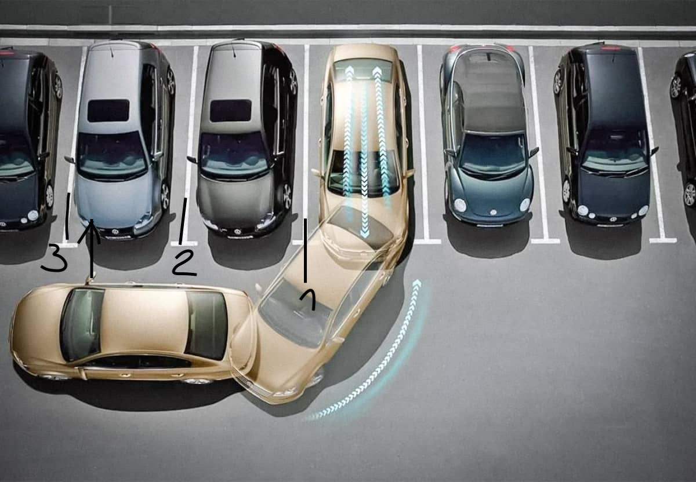
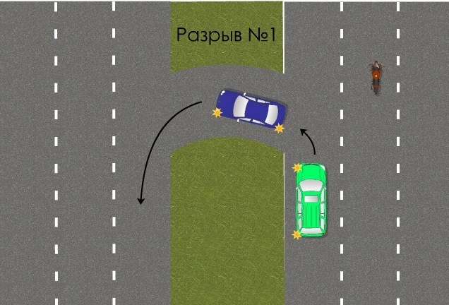
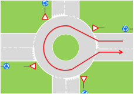

Маневры
Остановка и выезд
Для остановки делаем все то же, что и для поворота направо, смотрим 1, 2, 3 в зеркало заднего вида в правое зеркало, в правое окно. Включаем правый поворотник и встаем вдоль бордюра аккуратно.
Парковка вперед
Парковка назад

Параллельная парковка
Развороты Wenden
Главное требование в Швейцарии: уважительно относиться к другим. Поэтому повороты следует совершать только следующим образом:
Разворот задом
Warning
Выполняется на парковке задом (Wenden rückwärts)
- Задом через правую полосу (Wenden rückwärts in Ausweichstelle rechts)

- Задом через левую полосу Wenden rückwärts in Ausweichstelle links

- Трехточечный разворот 3 Punkt Wenden

Разворот передом (U-Turn)
Warning
Выполняется на кольцах и вокруг "островков"
Для U-Turn требуется много места. Делать u-turn нужно через островки или где есть круговое движение.

- Разворот через разделительную полосу (insel turn)

- Разворот через кольцо

Задний ход
Warning
Задом запрещено ехать в туннеле, на кольцах, автобанах, магистралях, дорогах с односторонним движением
В Швейцарии на экзамене могут попросить проехать задом. Для этого необходимо занять полусу встречного движения и ехать не по своей полосе, а задом по встречке. Для этого повернуть налево и занять крайне левое положение встречного движения в соответсвии со всеми особенностями поворота налево, зеркалами и взглядами в окно. Потом начинаем ехать задом и пропускаем транспорт которые подъезжает к нам спереди. Встречка к нам будет спереди подъезжать. Таким образом может получиться, что вы будете задом ехать на перекрестке. Поворотник влево так и должен моргать (вроде бы).
Экстренное торможение
Экзаменатор попросит разогнаться и потом скажет Vollbremsung - тормозим в пол. Никуда смотреть по зеркалам не нужно, на то оно и экстренное торможение.